CP
Carol Pacheco | Arquiteta | Sócia Archsoul
Arquitetura que
transforma espaços
em parte da sua história.
Projetos residenciais e comerciais pensados para unir identidade, funcionalidade e propósito.
Sobre Carol
Arquitetura com Propósito
Acredito que os espaços moldam nossas emoções e nossa rotina. Minha missão é traduzir a sua identidade visual e funcional em ambientes atemporais e sofisticados.
Serviços - Que espaço você quer transformar?
Cada projeto começa entendendo como você vive, trabalha e deseja sentir aquele espaço.
- 01 Residencial: Casas pensadas para sua rotina, identidade e forma de viver.
- 02 Interiores: Ambientes que equilibram estética, funcionalidade e conforto.
- 03 Comercial: Espaços que comunicam posicionamento e experiência de marca.

Serviços
Que espaço
você quer
transformar?
01 RESIDENCIAL
→
02 INTERIORES
→
03 COMERCIAL
→
Próximas Seções
O fluxo natural continua aqui...